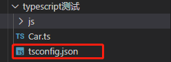
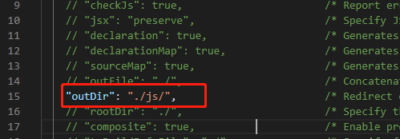
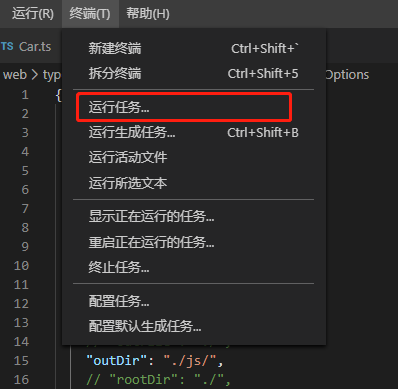
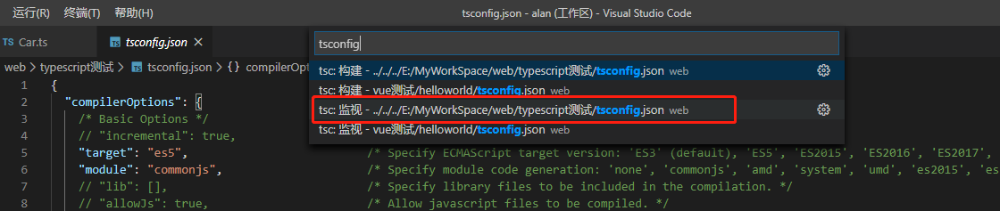

VsCode配置让 ts 文件自动编译为 js文件
1、创建 tsconfig.json 文件
在 ts 文件的目录下，运行如下命令，即可创建 tsconfig.json 文件
tsc --init
如图：

2、修改 tsconfig.json 文件，设置 js 文件输出路径： "outDir":"./js/"
如图：

3、设置 VsCode 监视任务
1）选择 “终端” -> “运行任务”， 如图：

选择 “tsc:监视 ../tsconfig.json ”，这样保存 ts 文件之后，vscode就会帮我们自动编译成 js 了

未完待续~~~